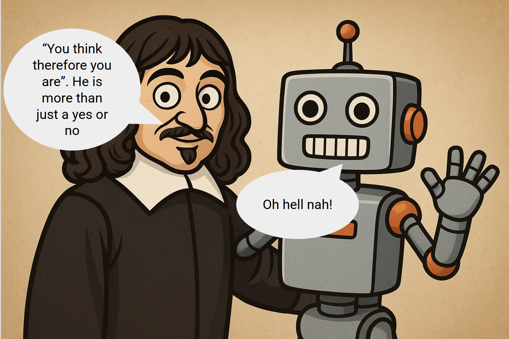

Introduction
Working in robotics naturally pulled me into the world of AI—because in today’s era, intelligence isn’t just about code,
it’s about giving machines a body to interact, learn, and act in the real world. I never followed a strict, textbook path
to learn machine learning; instead, I stumbled into it, explored out of curiosity, and discovered how exciting the journey could be.
What fascinates me most is not just how AI works today, but how these ideas first took shape—the roots of the complex architectures
and learning algorithms we rely on. That curiosity eventually led me to dive into Associative Memory Models, better known as Hopfield
Networks—a concept that bridges neuroscience, physics, and AI in a way that feels both timeless and futuristic.
One fascinating detail worth mentioning is that J.J. Hopfield was jointly awarded the 2024 Nobel Prize in Physics alongside Geoffrey E. Hinton,
recognized for their “foundational discoveries and inventions that enable machine learning with artificial neural networks.”
The ideas I’m exploring here stand on the shoulders of that legacy. They are not just the work of a single mind but the result of decades of
collective effort—researchers, physicists, neuroscientists, and computer scientists—each contributing to our understanding of how the brain
works and how we can model intelligence artificially. Without their breakthroughs, the journey from studying neurons to building artificial
intelligence would not have been possible.
To put it simply, a Hopfield Network can be thought of as a network of binary units (like little switches that are either on or off)
connected by weighted links. These weights are carefully set so that the network “remembers” certain stable patterns—like snapshots
of information stored in its memory.
Once trained, the network can reconstruct an entire memory from just a small fragment of it. This mirrors how our own brains work:
for example, catching just a faint smell of a dish might instantly bring back the memory of a specific food or even the moment you
last had it. In this way, Hopfield Networks don’t just store data—they recreate the feeling of memory recall itself.


Comments